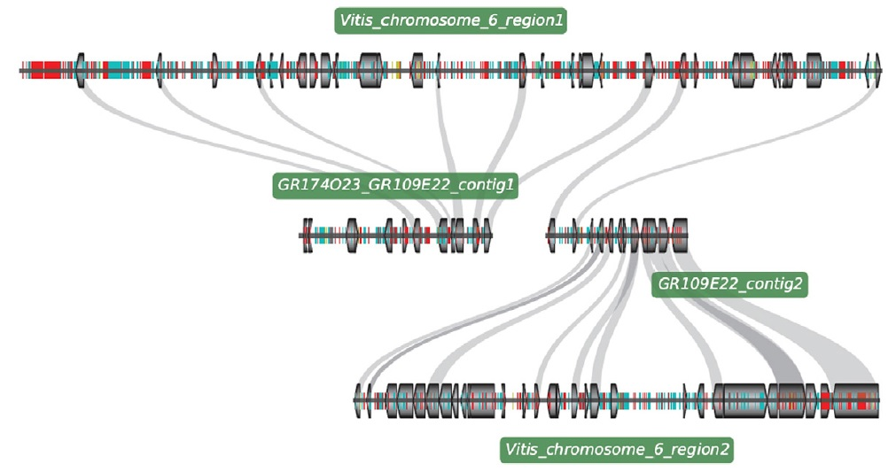
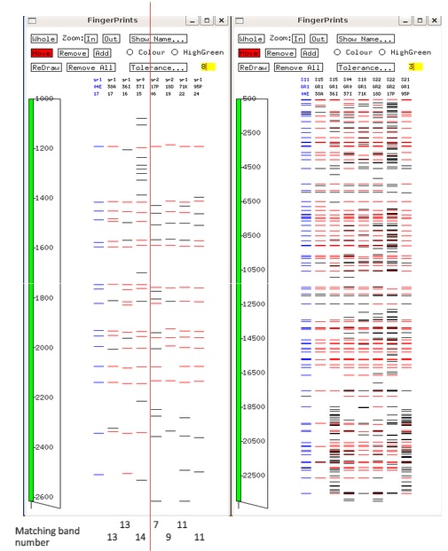

My name is John Smith and I am a Designer.
This is my online resume.
Click the icon to the top-right corner or simply start scrolling. Enjoy!
All scripts that I developed are by contract proprietary to my employer, and therefore I cannot share any of the codes here. My apologies.
The script was called MC-Scan, developed by my friend and colleague Haibao Tang. I was only a very small part of the development, but it is the first real bioinformatics project that lead me into the realm. This script is based on Collinear-Scan that scans large and complex plant genomes for collinear segments. The brilliance of this package is its ability to scan for one-to-many segment relationships between two genomes, making it extremely powerful in detecting ancient paralogous sequences and catching paleopolyploidy. In fact, it independently caught the Arabidopsis alpha genome triplication event before the grape genome was published. The previous sentence may not make much sense to many, but if you are in the field, you know it's a big deal.
This is a collection of interconnected python scripts. The purpose of the pipeline is the identify the best genomic regions that distinguishes two groups of species by scanning through all segments of their genomes. The segments or genes that are conserved within each group of organisms but differ appreciably between the two groups of organisms are deemed desirable. The pipeline evaluates the usefulness of each segment.
This is a web tool developed using PHP, Python and MySql. The basic functionality is similar to NCBI web BLAST, but with many additional features such as user-provided database annotation file, tracking and archiving of input sequences, ability to auto-trim and convert ab1 files, read sample information from a tab file and automatic archiving of results into database.
This is essentially a system to design primers and probes. There are commonly used primer design tools since the beginning of days, many of which are quite robust and successful already, such as Primer3. However, none of them quite fits the specific requirements for our assays. Our team at Nanosphere developed an in-house script package that dynamically fits the needs of our different design requirements. It take into consideration specificity, inclusivity, thermo-dynamics, multiplexing compatibility in much detail, which ensured a high success rate in our oligo designs.
This is an on-going large project aimed to create a database driven platform that meets all the design and analysis needs in the company. It includes a database schema similar to that of GenBank, a web portal for lab access and data archiving, a collection of perl and python scripts that draws data from the database, execute analysis and archive results.
Job Description: To support and to continue the development and integration of diverse in-house bioinformatics and statistics tools for designing multiplex nucleic-acid-based IVD assays, including computational pipelines to aggregate/synchronize large genomic data sets from multiple sources, internal nucleic acid sequence databases for comparative genomic analysis, pipeline for oligonucleotide probe designs, database and web tools for querying and evaluating oligonucleotide probes, and tools for automated assay data collection and analysis.
In simpler phrases: Determine the best oligonuleotide sequences to be put on the product that satisfies the marketing needs; follow through the whole product development cycle and help to make sure they work as they should. At the same time, try to improve the work efficiency by developing new tools for both the bioinformatics team and the lab team as well.

In order to understand the evolution history of cotton genomes, we aim to use the sequenced grape genome to elucidate the number of whole genome duplication events that had happened in the cotton genomes and its possible impact on the modern cotton genome landscape. This information is useful in making meaningful comparisons between the cotton genome and other sequence resources.
The most important feature of cotton plants would be the length and quality of the fibre. To study the genetic basis of fibre development, the identification of underlying gene(s) is always a first step. The Lab maintain a collection of fiberless cotton mutants. I have spent several years developing mapping population and pin-pointing the gene that caused the phenotype by a method called "Chromosome-walking". A detailed map of the gene region was constructed by my research, but unfortunately I was not able to clone the gene by the time of my graduation.
|
Physical mapping is the technique that pieces together small "clonable" fragments of the target genome into contiguous genomic scaffolds so that the whole genome can be represented by a collection of library inserts with known position and known sequence. This method is extremely useful in large and complex plant genomes where rampant whole genome duplication events and large transposon explosions often create bit troubles in whole genome sequencing attempts. The assembly of such genomes are a lot of times dependent upon the direction of a scaffold of physical map. With integrated genetic markers, this physical map can often be used in place of a complete genome. I am glad to say that even though the continuous breakthroughs of genome sequencing techniques may be gradually overshadowing the process of physical mapping, the work that I have done nonetheless helped in the later projects of cotton whole genome sequencing. |
 |
Genetic markers are the life-blood of any genome maps. After all, if we compare a genome to a map, what good is a map without road signs? Like many of the work in cotton, the major obstacle of this project is the lack of sequencing resources and the complexity of the genome. With a huge amount of wet-lab testing and verifications, I was able to screen out molecular markers that target the gene locus despite a low success rate by nature. The markers that I designed at the time range from SSR, SSLP, to "ancient" types like RFLP. SNPs were tried, but not prevalent due to lack of sequences.
*Publications dated after 2010 are done outside my full-time commitment as a Bioinformatician.
Ph.D. 2010 University of Georgia
• Theoretical trainings in genetics and genomic analysis methods including genetic mapping, molecular marker discovery, genome assembly and gene predictions, comparative genomics and genome evolution studies;
• Technical trainings in nucleic acid-related molecular lab techniques including DNA extraction, PCR, sequencing, oligonucleotide probe-related handling and experimentations;
• Scripting language preference: Python
• Database preference: MySql
• Statistical analysis: Python-Pandas, R
BioinformaticsScientist at gmail dot com